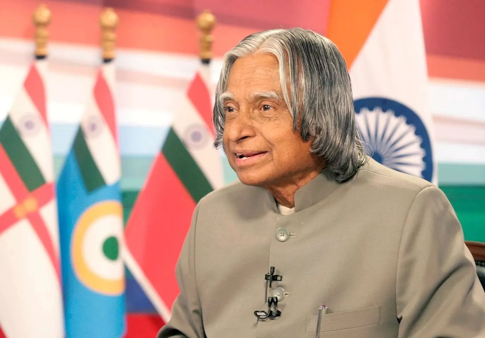

an Indian aerospace scientist and statesman who served as the 11th president of India from 2002 to 2007 (WWW)
He was born and raised in Rameswaram, Tamil Nadu and studied physics and aerospace engineering. He spent the next four decades as a scientist and science administrator, mainly at the Defence Research and Development Organisation (DRDO) and Indian Space Research Organisation (ISRO) and was intimately involved in India's civilian space programme and military missile development efforts
Madras Institute of Technology( aerospace engineering )
He studied at Madras Institute of Technology, in 1955.

Awards
1981: Padma Bhushan - Government of India
1990: Padma Vibhushan - Government of India
1997: Bharat Ratna - Government of India
1997: Indira Gandhi Award for National Integration - Government of India
1998: Veer Savarkar Award - Government of India
2000: SASTRA Ramanujan Prize - Shanmugha Arts,Science,Technology & Research Academy, India
2013: Von Braun Award - National Space Society
HERE IS WHAT WE NEED TO KNOW ABOUT A.P.J.Abdul kalam
Avul Pakir Jainulabdeen Abdul Kalam was born on 15 October 1931, to a Tamil Muslim family in the pilgrimage centre of Rameswaram
His parents were boat owner and mother is an local mosque .
he Madras Institute of Technology Madras in 1955 to study aerospace engineering
Kalam served as the 11th president of India,
If you have time, you should read more about this incredible human being on his Wikipedia entry.